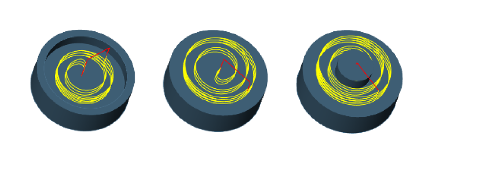
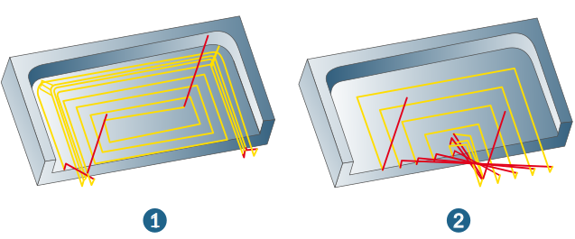

Strategy
Specify the machining strategy.
Machining mode
2D mode: the machining is performed with 2D data. Milling area and stock cannot be defined.
3D mode: In 3D mode, use the milling area to define the CAD model's machining area (see the Setup dialog page). This also means it has already been checked for collisions. For further information on the Milling area dialog, see section The milling area dialog.
You can also generate a stock model (see the Setup dialog page). This can also be used for a stock update.
In addition to the tool tip, you can check the holder and shaft for collisions. For further information on tool checks, see section Check tool.
Stock mode: In this mode, the outermost contour is defined as the stock section contour. Contours lying inside are considered islands. Machining is always performed from the outside in.
Cutting direction
Select the Climb milling or Conventional milling option for the tool cutting mode. The cutting mode relates to tools rotating clockwise.
 |
For climb milling, the following cutting modes apply to tools that rotate clockwise:
-
Counterclockwise for pocket contours
-
Clockwise for island contours
To perform climb milling with an anticlockwise rotating tool, select conventional milling. Climb milling and conventional milling are also available for High Performance Mode.
Adaptive pocket
Use adaptive pockets: Optimized machining of rectangular pockets (also with fillets), as well as open and closed circular pockets with open and closed concentric islands. Available for 2D mode and Stock mode.
|  |
The following applies for machining rectangular pockets: hyperMILL automatically calculates the most effective removal movement depending on the proportion of the tool to the pocket.
Spiral, tool D10.0 (1), contour-parallel, tool D20.0 (2).
|  |
Adaptive pocket parameters: options for adjusting feedrates and infeed under full cut behavior conditions.